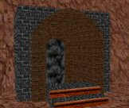
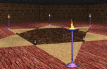
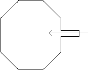

Kriegspire: Devil Outpost
The faint smell of brimstone and the sound of creatures talking in a strange
language drift from the entrance of this cave.



Besides finding a handfull of Devil enemies, you can pick up a message scroll from
the corpse of the Devil of Baa. The scroll is needed to complete the [
Devils' Outpost
Quest]
Leave us a message at: mgrounds@hotmail.com
This Page was last updated on in the year of 1998.